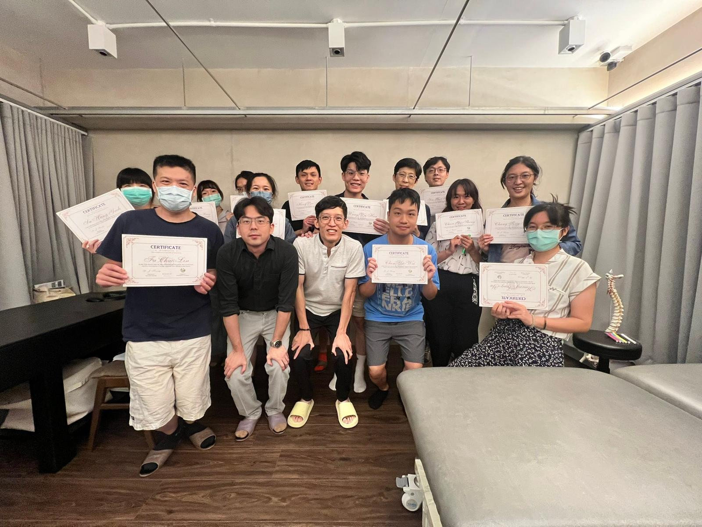
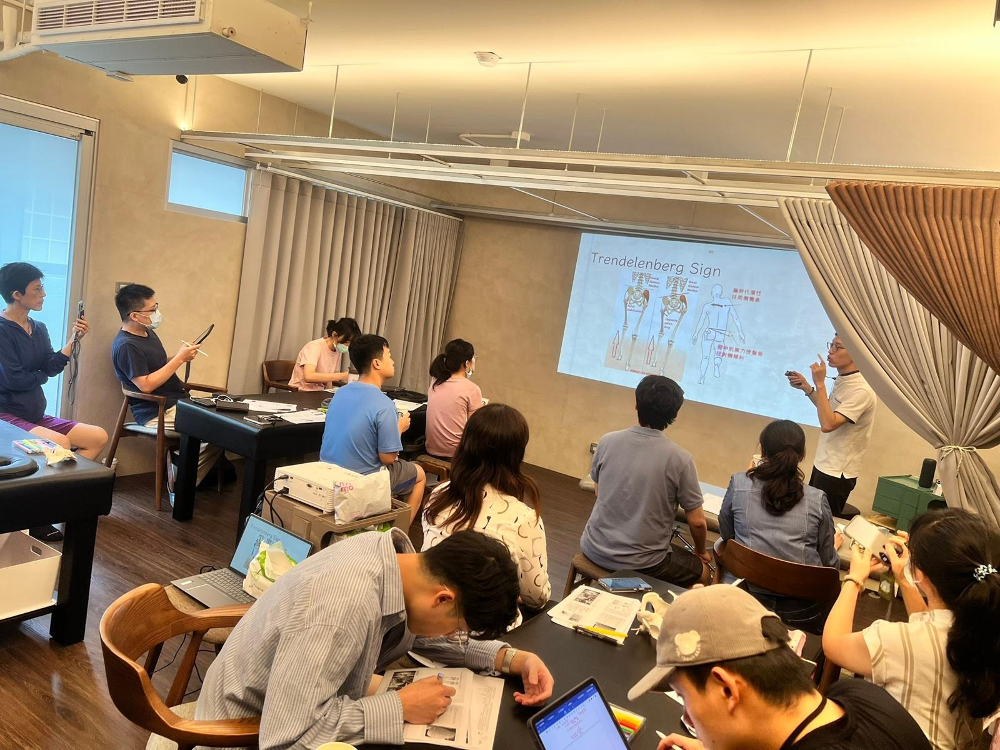
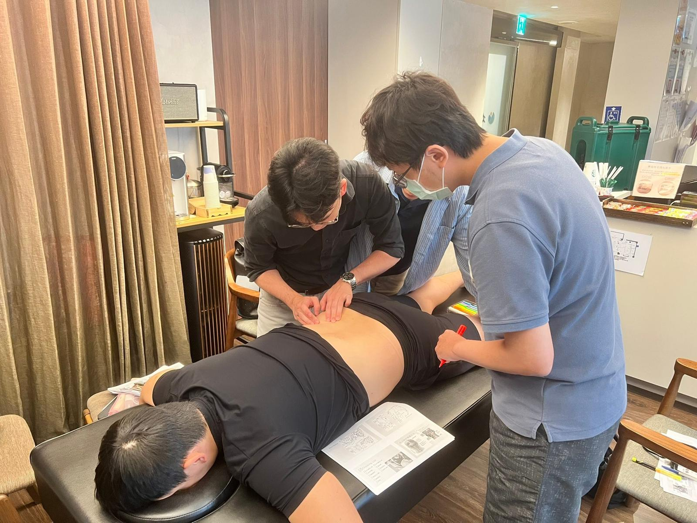
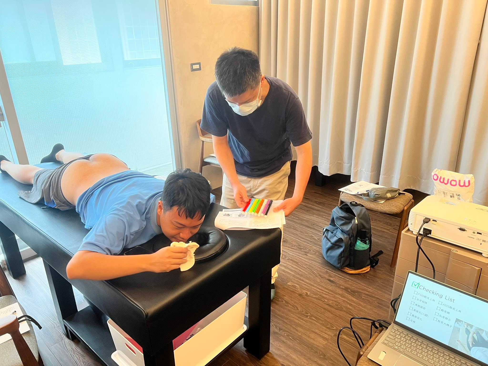
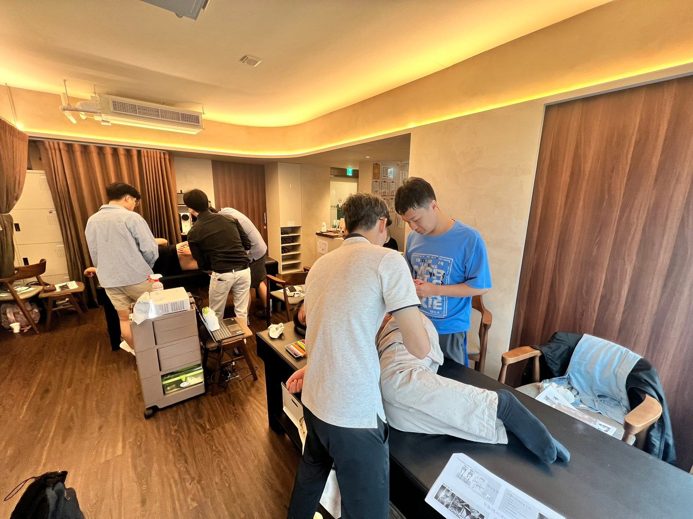
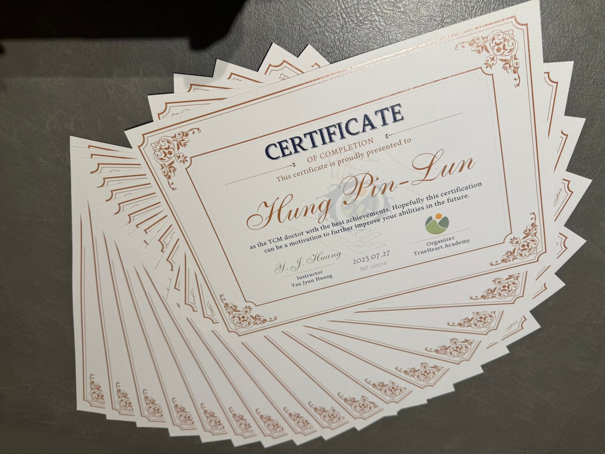
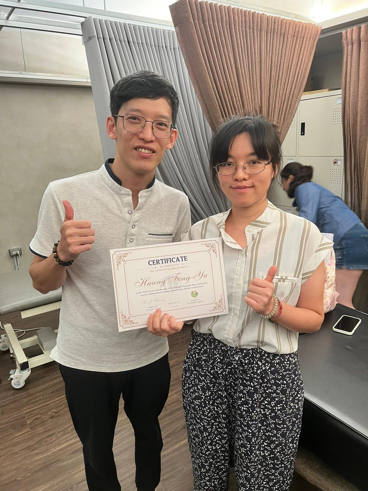
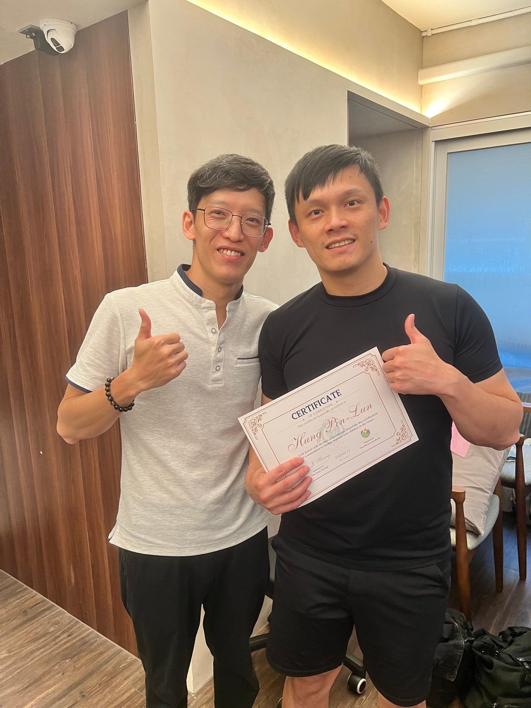
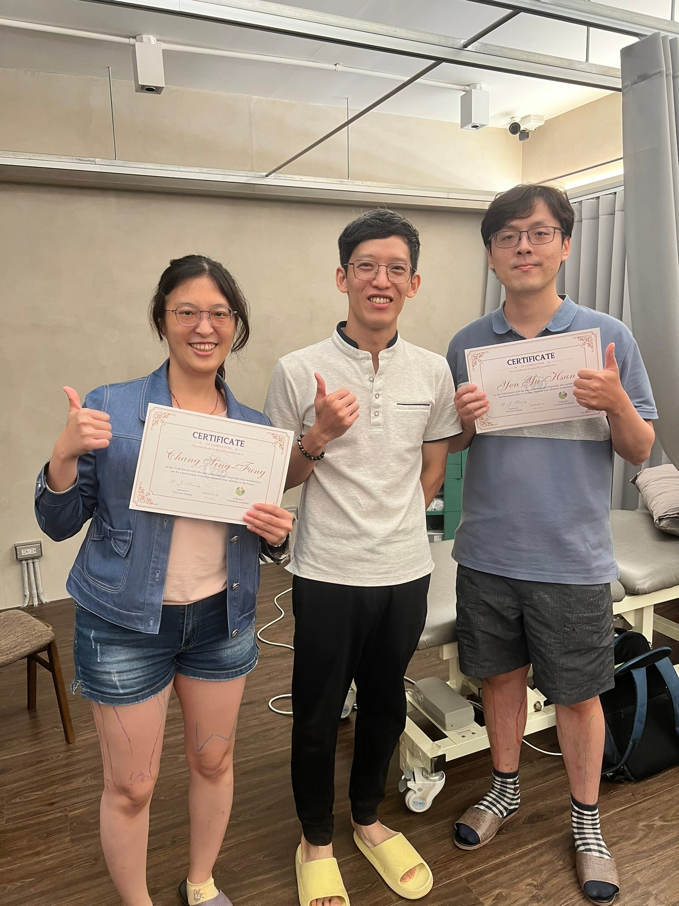
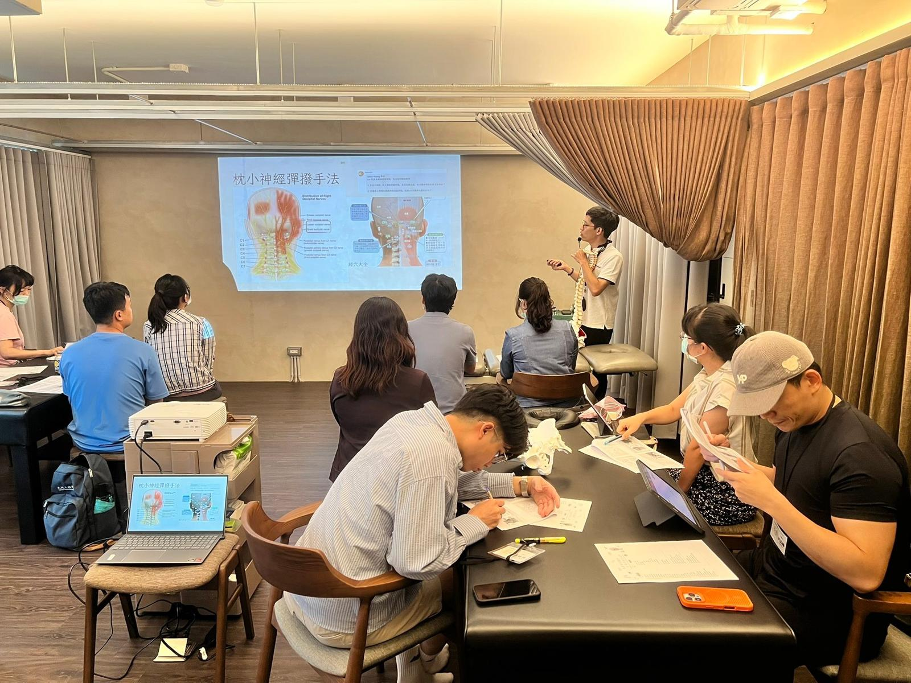

［表面解剖與徒手入門］第一梯次 成功✅
［表面解剖與徒手入門］第一梯次 成功✅
今天是一次人生里程碑的完成，從學生畢業到執業至今，投入了許多心力在學習中醫傷科，甚至進入物理徒手治療領域，看到了中西雙方領域中有重疊、高度相似的內容，也看到雙方各自的長處與不足，透過這次機會，總結出了這次的【表面解剖與徒手入門工作坊】，這些內容是從我這些年所學中精粹出來，對於中醫師面對常見疼痛問題時，應有的解剖徒手分辨基礎能力與常用思路原則。
我固執地認為，唯有把基礎能力建構好，才有可能造就治療時的游刃有餘，所有的「覆杯而愈，、應手即得」的背後，都是基礎功的千錘百鍊，知道、看到、摸到、做到，然後不斷重複打磨，踏實穩健的基礎功，才是臨床叢林冒險的定心丸。
今天很開心能與第一梯次的16位醫師們，一起完成這個對我來說別具意義的里程碑，有執業多年的學長姐，也有剛畢業的學弟妹，在 太初·初心苑這個場域裡，沒有輩份階級，就是很純正的學、摸、找、畫，一步一腳印，手把手把每一條肌肉在自己的手下摸得清楚明白。
中醫針傷科徒手，需要這些實實在在的存在，需要能有憑有據的交流，才能跨出同溫層與其他專業合作對接，才能發揮醫療最大的效能。在這個時代裡，埋頭單幹，絕對是行不通的。
我的所學來自於每一位教導過我的老師、同儕，實在是族繁不及備載，並非屬於我個人獨有，我只是一個過度、一個媒介，把這些知識所學，拼接湊數轉化成適合中醫師們診間應用的墊腳石，真心希望參與的醫師們收穫滿滿，能產生實質上的影響，透過這份改變造福更多人。
教學總是相長，過程中我才是學到最多的那一個。再次感謝所有幫助過我的所有人，也感謝願意花時間來參與工作坊的每一位醫師，過幾年後再回顧這個里程碑，一定會替自己感到滿足與驕傲。
中醫師 黃彥鈞
太初中醫診所 東門中醫
#表面解剖與徒手入門









